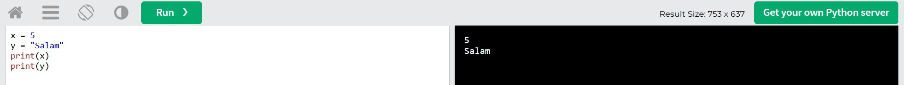

Dəyişənlər
Dəyişənlər hansısa bir dəyəri saxlamaq üçün istifadə olunan yaddaş sahəsinə deyilir. Nümunəyə baxaq:
Dəyişən Tipləri
Əvvəlki nümunədə biz gördük ki, bir dəyişən ədəd formasında yaş saxlayır, o biri isə yazı formasında ad saxlayır. Bunlar data tipləri adlanır.
Pythonda bir neçə əsas tip var: